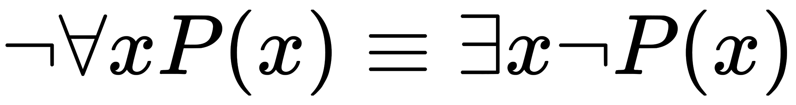
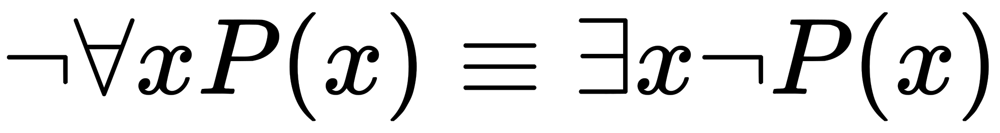

Book 1: Being¶
The Question¶
Albert Camus once stated there is but one philosophical question and that is suicide. In this, Camus skipped over much to arrive at his starting point. However, to his credit, he only meant it in the rhetorical sense, as way to examine the absurdity of living in a universe where you are fated from the very start to die at the end. Nevertheless, there is a definite proximity to primordial truth in his formulation of the so-called “philosophical question”.
This is what Camus got wrong: There is no choice to be made in the face of Death. All life is suicide, in a sense; it is merely the method of dying we are allowed to pick, and only then up to a point, as the survivors of self-inflicted gunshot wounds will attest. When one chooses to die, all that is accomplished is akin to skipping ahead to the end of a book. Everyone implicitly knows time is a poison that kills them, for it is taught to us from the very second of birth; a new-born infant left to its devices would surely die and if its cries can be understood at all it is only as a gasping for life, a choking on Being, a dim awareness that it is a thing and it is in mortal danger; Death is not conceptualized intellectually in this moment, but is apprehending in its true form, that of unbridled fear and uncontrollable passion; only through the intervention of an Other thing is the infant allowed to live; from this we learn, or are atleast given the raw material for the conception of, causality, that our Being as a thing is affected by the Being of Other things, and, this being the point, that this affectation arises as an alteration of the infant’s trajectory towards Death: a thing which is Other to ourselves prevents us from dying in our very first moment as a separate entity. If, in what follows, we come to see the Other as life, then it is only insofar that our Deaths are held at bay with their cooperation. Life, in this formulation, is not a positive phenomenon, but a negation of a total Nothingness. I am because I am not dead, and I do not die, at least for the time being, because the Other is.
Only in the sequel, once Death is no longer immediate, do we come to understand the nature of time, in the way leaves wilt on dead tree limbs, in the way organic material rots, in the way delicate things are liable to break. A Being cannot be without the phantom of Death shadowing its every step, making its presence known obliquely. All of these things we must realize before we consider the philosophical problem of terminating our own lives. Only in the subsequent development of self, once reflective consciousness1 enters into the equation, and we realize we are of a genre with all those things that pass away from Being in an abstract sense, do we ask whether or not a life always imperilled is worth living.
The thesis of the present work can be summed up succinctly in the opening paragraphs, so that no one need read any further and may at once put these words to rest so as to never think on them again: Death is the bedrock at the bottom of Being; it precedes us in every way, before knowledge and language, before awareness of time and space, before the birth of our historical self. In order to be we must possess the ability to die, first and foremost. As such, we are condemned to die simply by Being. Whether we die in ignorance or with full awareness of our mortality matters not to Death, because Death is not something that cares2. From this and because of this, all things proceed.
Despite being the foundation of almost every human pathology, Death as a field of inquiry has received comparatively little analysis over the course of history, except in the medical sciences where it is treated clinically, to be catalogued and diagnosed along with all the other maladies and diseases and thus placed into a knowable relation with the rest of Being, or in the spiritual studies, where it is mythologized and understood only through metaphor, never as an experience that happens to us.
There is a reason for this: Death as a subject is repellant to individual understanding. Its very definition presupposes the limit of the knower; That is to say, Death is inherently unknowable. Death can only be understood through the mechanisms of analogy and metaphor, via the circuituous and torturous route of empty symbolism, for when we turn our attention directly to the object of Death it reveals itself as something which is not to be found in our Being.
We can be aware that we will eventually die, we can perceive others passing from this world, we can even in unique circumstances perceive the manner of our own Death, but none of this gets us any closer to the experience of Death, none of this allows us to see what it is like to die. Our experience and awareness of experience will never be extended into Death itself. We never see Death for what it is, because it is Nothing, the absence of our Being. Death is the point where experience and awareness stops.
In this way, we mean Death exists beyond the limit of understanding, in a way that it destroys that which it transcends. For our Being in the world is inextricably tied to an understanding of our Being, so much so we may be tempted to posit Death as that which removes this possibility from our Being, and thus annihiliates our Being. In this way, as a result of the unknowability of Death, the ontological necessity between our Being and knowledge emerges, for if our Being and Death are inverses and if Death is by definition unknowable, then it must follow that our Being is that which is knowable. The provisional aim of this work is to show this unknowability metaphysically precedes and constrains Being, and that furthermore this constraint imposes upon Being an ontological character. Death, in the unknowability of its Nothingness, illuminates Being.
Death then, while unapproachable, becomes a way to understand our own Being, for it shows us the domain of the problem, the problem being what it means to be in a world that must by necessity contain our Death. Death is a priori to Being, baked into all ontologies, even if their formulations hitherto do not explicitly acknowledge it as such. To be inherently contains the possibility of not Being as a necessary and sufficient condition for coming to be. Because things end in our perception, in time and space, they are differentiated; if all things were never ending, all objects would be continuous with one another, instead of distinct and separate; things are only distinct insofar that they are not identical, so that to be distinct, it must be possible a thing is not something else; so if we then ask, without reference to the external world and only with respect to ourselves, what is it that our Being is not? There is only one answer. The invariance of Death is a fundamental constant of nature and thus provides a universal metric by which to unpack existence into representative form.
It will be argued by philosophers that the author has adopted a humanist perspective and has not sufficiently divested himself of the pecularities of human Being. Death, they will argue, is not an ontological prior, but posterior to the notion of Being, for it is dependent on the numerous attributes of a particular Being; chemistry and biology could be otherwise, they will argue, so that life need not by necessity imply Death; the laws of energy, whereby all things eventually dissipate into heat, they will argue, need not be the case; the motivating factor in every human endeavor, they will argue, can be abstracted away from experience, so as to be analyzed in “scientific” isolation.
This argument will be addressed in great detail throughout the course of this work, but as an immediate reply to those who hold fast the proposition, it is possible to imagine Being without Death, the question must be posed: and what would that look like?
To ask questions about a subject that perpetually recedes from all attempts to know it necessarily entails the admission up front that no answers can ever be conceived, much less perceived. The inevitable end result will be to arrive where we started, back in the here and now, having gained Nothing, except perhaps an understanding of what it means to be futile, which will anyway evaporate when we die; If any proposition can lay claim to human nature, this is it.
It would seem, then, it does not matter which direction we choose to go, since we will always return to our starting point, no better or worse for having made the circuit. For this reason, the author recommends no one should read what follows. Instead, the reader is advised that going outside is by far a better course of action.
What is Being?¶
With the warnings of futility thus dispensed, we will preface our discourse with a brief tour through the current state of our understanding of what it means to be. If Death can be said to be anything, then it seems likely it must be as a negation of Being, or at the very least a certain type of Being, the type of Being we ourselves have. Whether or not the subject of Death’s negation is life, or a living thing, cannot yet be concluded, for it is not clear at this stage in what ways not Being dead is equivalent to Being alive, for a rock is said to not be dead, yet we do not conclude therefore it is alive. We therefore take it as a provisional hypothesis, that Death is a negation of a type of Being, with the understanding that we have much to show before this statement can be taken as fact and in what way it is to be understood. We have not yet defined what it, the Being to which we refer in the preceding as subject to Death, is, so that its negation likewise lacks clarity. We must first ask whether Being is uniform, and thus Death is its universal negation, or if Being itself is divided, and if it is, which type of Being it is that is negated in Death.
Therefore, we first examine our understanding of Being to bring the scope of the problem into view. This will necessarily entail a brief discussion of the history of philosophy and what has led to our current understanding of Being. What is presented in the next sections is by no means an exhaustive commentary, but only meant to highlight concepts as they pertain to the current analysis.
The maturity of a field of inquirty can be seen in how close to its foundations its crises occur. Mathematics, by far the most mature of the sciences, took more than two thousand years to move past the crises in its theorems, e.g. the determination of areas, the calculation of ratios, the solution of equations, etc., before finally grappling with the crises in its foundations, e.g. notions of primitives and Number, of Infinity, of completeness and consistency (and their inherent mutual exclusion), etc. This direction of progress bears an interesting feature, in that it is the opposite of what we would expect if the intellect were purely rational. In logic you start with assumptions and apply rules of inference until arriving at the complex conclusion; this is the exact opposite of the actual history of mathematics. Humanity first needed to study the application of mathematics, via the straight edge and compass, via computation and ratio, before grappling with the meaning of its precepts, as if the foundation of mathematics was consequent upon its use. While counter-intuitive, further reflection reveals this is as it should be, for to know a thing deeply you must first know it approximately. There are no marriages built in darkness.
In the last three hundred years, a similar reckoning has been underway in philsophy. As a species, for the past millenium, we have spent considerable time pondering the consequences of morals and aesthetics, taking their existence as givens and working out the results of their application. With the formulation of Cartesian scepticism, the artifacts of Aristotelian philosophy were shattered in order to examine their constituent pieces and then reworked into grander schemes. A clear line of philosophers extending through Descartes, Kant, Husserl and Heidegger began to challenge the notions upon which philosophy itself was built, by applying the analytical methods of rationalism to the most immediate of all datum: experience itself. We thus come to a crisis of philosophy in which even the most elementary questions one would think answerable provoke silence: What are we? What am I? What is this? What is, in general?
There is an inherent problem with the application of the scientific method to the problem of Being, which these thinkers grappled with at great length, in that a investigation into Being will necessarily come to the point in which it must investigate, as a Being, that which is investigating, i.e. itself. Having placed the faculty of judgement that allows us to draw conclusions about the physical from the mechanics of the mental wholly within the physical, we lack the outside perspective to judge the effects of such judgement and are left with only the proposition itself as a ballast, that is to say, the truth of our observations about Being depends on whether those observations contain within themselves the metric by which they are judged true. But, in our dealings, the only way we approach truth and falsity is by understanding what is and what is not the case, which necessarily entails our judgement. We can not expect a judgement to be rendered outside of our faculty for judgement, for otherwise, truth would be something that could be encountered, in itself. That we cannot hold truth and measure its dimensions speaks to its metaphysical nature. For when I say, I am this, what proof is there but self-evidence? Look and see, that is the only thing we can mean by such a proposition.
By objectifying our Being and making it the subject of study, we necessarily lose its personal subjectivity, and render our object of study unapproachable, passing it by like a ship in the night. When one attempts to engage with phenomenology, one must careful with the avenues of inquiries one selects to make clear and apparent the object of study, which in this case is no object at all, but the subject itself insofar that it is pure subjectivity.
When philosophy attempts to hew to the scientific method and objectifies the subject, it necessarily becomes reductionism. For this reason, the project of philosophy in the modern world, instead of elucidating and clarifying the meaning of these terms with respect to the advances of modern science, by attempting to emulate the results of science outside the domain of its problemset, has become to explain away, not only consciousness, but Being itself, by reducing everything to representation and formulae, as if these representations and formulae did not exist as representation and formulae through our Being first before their subsequent interpretation.
No doubt the advance of machine learning and artifical intelligence has helped mislead philosophy back into the rationalist trap in which it has so often found itself stuck throughout history. The results of these fields are staggering and alluring, as if everything we are might be reduced to the mechanical equations of a machine, as if consciousness and Being were contained in the regression coefficient matrices underlying machine learning and not their application over time and space.
TODO
It seems likely that we will, in the near future, have an algorithm capable of producing a process that yields digital sentience, but we must be careful to understand the implications of such an algorithm. It will not be the symbols themselves that offer up another soul to the universal meat grinder, but the utter incomprehensibility of their results uninterprettable without the presupposition of the Other that will give rise to digital Being. We should not expect to find the meaning of the algorithm in the instructions it prescribes, but in the actual conceptualizations formed by the algorithm.
Neural networks provide an interesting case study in Being, if we suppose these models do in fact possess some resemblance to actuality. A neural network, as currently understood in computer science, is nothing more than a recursive tree of regression models, where each node in a layer of the tree is dependent on the nodes from the previous layer and in turn feeds into the next layer.
When
[neural network image goes here]
For instance, we might model our brain’s image recognition as a network that takes as its initial input the excitation levels of the red, blue and green cones in our eyes. The first level of inputs would take the form of a (R, G, B) vector and produce a tree of output that feeds into the next layer of the network, analyzes the cross-interactions of each input variable in the previous layer, and so on, until finally reaching a concept node that maps the initial input through the layers of the network to an concept such as dog, cat or boat.
Model trees like this can be calibrated to datasets, so each node of the tree has a formulae for constructing the input to the next level. We feed into the model datasets that have been pre-labeled, i.e. this image contains a cat, this image contains a dog, etc. This network, or tree, of models is then trained against this control data set, so that it can be used to ingest unknown images and render predictions as to their content.
TODO
Being and Existence¶
The path before us is littered with questions the answers to which are not at all clear. We do not get very far towards understanding our nature when we begin with even the simplest of questions. To wit, when asking what are we?, we must first understand what we mean by the notion of is, so that we precede this understanding with an attempt to understand an even simpler formulation that is no less tangled in its meaning, what is this?, before arriving at what we suppose to be simplest question of all and thus easiest to understand: what is?. This simple word, perhaps the foundation of all language, is, the present tense of to be, bears in it a confusion of concepts, so that when we pose the question what is? versus what is this? versus what are we?, it is not clear the role played by is is in fact the same in all cases.
For when we say a thing is and a thing is this, at first glance we mean two different things. There is in these two possible applications of is the notions of existence and Being, respectively. In the former case, the proposition is a claim of existence in general, regardless of its particulars, and in the latter, it is a claim about how, what and when a thing is.
As an example, we might take on one hand the proposition, the color red is and on the other hand, the blanket is red. We intuitively understand the former as an abstraction while the latter is what Whitehead termed a concretization, an actual occurence of the abstraction red. To put it another way, the former proposition can only be understood in thought, because the color red never occurs except through a Being, which is what the latter proposition makes clear.
The former proposition says nothing about the ways in which the thing exists, only that it is so, whereas the latter proposition seems to belong to the former in that it declares not only is it so, but further, it is so in such-and-such a way, so we are easily led to the conclusion the latter is a more particular case of the former. Before drawing that conclusion, let us examine the negation of each, for the relation of the negated parts makes clearer the relation obtaining between the original parts.
When we say a thing is not, we mean that it does not exist. With this claim, a thing’s potential to be a thing has been removed, except removed absolutely in the sense that it can never be in the first place. We must be careful in the interpretation of this proposition, for we bump against the process of Being when we vaguely apply the rules of conjugation and propose: this does not exist yet, but it may come to be or this did exist, but now no longer does. For we have invited the notion of Being in through the backdoors of does and did, when what we wanted was to examine the notion of negated existence in isolation. We therefore clarify that by existence we do not mean with respect to time and space, but absolutely in itself.
As an example, we could say God is not, unconditional love is not or a color without an electromagnetic frequency is not. When we say God is not, we are careful not to include, even in thought, the addition of here, i.e. God is not here, for that would undo the whole meaning, implying that God might instead be over there. God is not is an absolute denial of existence, a removal of possibility from the world entire.
The negation of a thing is this does not undo the thingness of the subject, but rather the source of its thingness. In the negation of this proposition, the existence of the underlying subject thing is not negated; indeed, it is affirmed as an instance of something but not of this. A thing is not this does not mean the thing does not exist, but rather that it exists, but is not given by the thing we mean by this; we may therefore say a thing is that. It is therefore the case the proposition a thing is not is not contained in the proposition a thing is not this, for a thing which is not this is still a thing.
As an example, we could say God is not this and we do not thereby deny his existence, only his particular form. If God is not this, then he must be that. Being is a division of existence into what is this versus what is that.
In other words, a thing is this and its negation a thing is not this both assume the existence of the underlying thing. The negation of one does not nullify the existence of its subject, so that whatever is meant by a thing is belongs to both a thing is this and a thing is not this. Nowhere to be found in either proposition are the effects of a thing is not.
This may be seen in another way. If the relation between Being and existence is one of containment, then it is either the case they are identical, a thing exists without being or a thing can be without existing. The first case, that of identity, can be ruled out, for the aforementioned reasons. Therefore, if a hierarchy relates existence to Being, then it is either the case Being contains existence, or existence contains Being.
In one way, when we say a thing exists we mean that a thing can be located at particular place, at a particular time. It exists by virtue of its encounterability in the world. In this formulation, existence is an instantiation of a category of thingness, a projection from possibility-space to real-space. But what is it that the thing acquires in crossing the boundary between the possible and the real? One is tempted to postulate matter, the stuff of material, as what separates existence from possibility, but before including this postulate in our canon, we continue the clarification of the term existence.
In another way, we say things, such as triangles, exist. But in this sense, existence has a transitive property, for the existence of triangles is necessitated by the existence of more primitive terms, namely lines and angles and these from more primitive terms still, such as extension and curvature, and the operations thereof used to combine them. The existence of triangles is dependent on the existence of the axioms used to construct its concept, so that when we claim the existence of a triangle, ultimately our claim is reduced to the existence of it constituents.
In truth, these two aspects of existence lead back to each other. When the aforementioned transitive property of existence is applied to the natural world and we claim a thing exists, the proposition, as properly understood, is a claim about the actual components of the thing, that is, there is an existent underlying the thing. In seeking to find the primary thing, the thing upon which all other existences are based, we are led down a series of divisions, segrating the thing into its components, until its components become nothing but pure existence. At some point, the end of this series leads to particles, to quanta of attributes (i.e. mass, charge, spin, position, velocity, etc.), these attributes being the “stuff” of existence.
There is yet another way we talk of existence that is not reducible to the previous two definitions. We say things like the number one exists and mean something else entirely different from the preceding. The argument that numbers are property of things, that is to say, that a number is always applied to a particular instancing of existents, i.e. three oranges, a dozen jurors, a million citizens, is fallacious in the following way. If number were an attribute of things, or atleast their aggregation, then number could not exceed the totality of existent things, or atleast the totality of possible things. If the number of (possible) things is finite, the absurdity is shown by adding one to their sum. If the number of things is infinite, the absurdity is shown by asking in how many ways the things which exist can be ordered, that is to say, we have here a number not included in the supposed infinity of things, of which number is supposedly an attribute.
This contradiction shows either the existence of number is independent of the thing whose existence it quantifies, for how else can a collection of things be ordered except by a number which exceeds their quantity, or that existence contains a dimension of numerability not reducible to quantity. If the latter were the case, universal statements, such as all whales are mammals would not possible, for it would not be enough to identify a thing as a whale to conclude it is a mammal, but the order in which it appears in the totality of whales would emerge as an additional condition which must be ascertained before the truth of the proposition can be judged. That this is not the case, i.e. knowing all whales are mammals is sufficient to determine whether this particular whale is a mammal, leads us to conclude number is separate from the physical matter it quantifies.
The existence of number is always thus, separable and distinct from the existence of things which are enumerated. In this way, existence can be said to be beyond the things, i.e. the substance or matter, to which it also applies. We have here our first ballast by which to divide Being from existence: in the realm of Number, there always exists a thing which can not be, by virtue of ordering.
In attempting to define a thing as existence, we have passed by its Being entirely. For if the Being of a table was reducible to its existence, i.e. its chemical composition, then it should not occur that separate existents should be separate tables, that is to say, if Being were identical to existence, a steel table would be a wholly different Being from the tree stump offered to the midday travellers as their lunch table. It is, however, the case that a table can exist through different mediums and retain its “table-ness”, so that in the account of only its physical properties, we do not touch upon at all what it is that defines a table.
These ambiguities between Being and existnce no doubt result from double duty is performs in our language. For when we say a thing is, we typically mean a thing exists, where as when we say a thing is this, we should understand this proposition as a proposition about its Being.
Matters are complicated with the introduction of time, for now a thing no longer simply is, but contains a multitude of ways of coming to be: is, was, will be, has been. With this terminology, it becomes clear Being intrinsically contains a dimension of time and space, so that Being is said to be with respect to time and with respect to space.
There is yet another way a thing is said to be and that is through the linguistic form of am. The notion of am is no general one to be affixed to an indefinite object, for this Being symbolizes a different type of Being altogether: the first person singular present tense. If language is a set of tools by which we represent ideas, am is an orthogonality to the representative dimensions defined by the other forms of to be, in that it is a form that by necessity requires a conscious subject, a prior not previously required in the semantics of Being.
Likening a proposition to a function, we draw a parallel to mathematics: a function only has meaning over a certain domain in which it makes sense for its operations to be applied; or, from the surjective direction, we may say a certain domain and its projection define the meaning of a function (as Fourier showed, by reducing all functions on a certain interval to infinite series of trigonometric functions, that in aggregate sum to the functions’ range), so that if we say the function which is defined by the mapping between the set of things which do not exist and the set of natural numbers, in some way we have defined what is meant by the notion of zero through this mapping and we may, in some sense, say the meaning of zero is contained in the mapping.
Likewise, the linguistic notion of am brings with it a certain domain and a certain projection, which clarify its meaning, for the (x,y) in the propositional function x am y cannot be arbitrarily assigned over the space of subject-nouns, over the set of existent things. Am defines a precise and particular subject: us. Specifically, I.
This can be seen in the syntactical error that arises in the proposition the thing am this; the meaning of am is only understood through I am this.
The Being of God¶
It should come as no surprise, given the importance and precedence of Being in the world as we are, that it is in the origins of humanity’s culture and religion that we likewise find the beginning of the historical account of our understanding of our Being, the Being of the am. The Bible, while its accuracy as it relates to the actual events of history may up for question, nonetheless serves as a time capsule for our understanding of Being, circa four thousand years ago. In its passages, we discover our early attempts to understand what is we are.
In the opening books of the Old Testament, within the text of Exodus, God reveals his true name to Moses on Mount Sinai,
And Moses said unto God: ‘Behold, when I come unto the children of Israel, and shall say unto them: The God of your fathers hath sent me unto you; and they shall say to me: What is His name? what shall I say unto them?’
And God said unto Moses: ‘I AM THAT I AM’; and He said: ‘Thus shalt thou say unto the children of Israel: I AM hath sent me unto you.’
God’s reply to Moses, derived from Hebrew,
אֶהְיֶה (ehyé) אֲשֶׁר (’ăšer) אֶהְיֶה (ehyé)
has been translated numerous ways: I am that I am, I am what I am, I am what am, I am that am, I am who am.
The Hebrew word, אֶהְיֶה, is the first person singular of the infinitive הָיָה, pronounced phonetically as “hâyâh”, which translates as to be, become, come to pass, exist, happen, fall out4. Modern Hebrew conjugates God’s reply in the future tense, i.e. I will be what I will be. However Hebrew at the time did not differentiate tenses. There was no difference, atleast grammatically speaking, in Ancient Hebrew between the notions of will be, has been and is now.
The term, אֲשֶׁר, is a semantic device known as a relativizer that plays the analogous role of the English that, seen in sentences such as I am writing so that you may read this, here is something that you can use or he told us that it was the case.
Our earliest stories are draped in the fuzzy, not-quite-distinct semantics of Being, as understood by our ancestors. The name Judaism gave to God, Yahweh, interpretted in this fashion, should be understood, by the dispassionate observer, as an attempt to enunciate and categorize types of Being, before language had properly clarified it meanings into the diversity of meanings seen in am, are, was, were, has been, etc. The choice of first person singular, as opposed to the impersonal third person, is telling, in this respect, for it is a claim about the Being of God, namely that God is in the same way the subject of I am is. Our first inclination to the divine, insofar as it has come down to us, was an expression of what is meant by Being, in particular the Being of the divine, and the Being of the divine, the Bible tells us, is identified exactly as the type of Being contained in the modern proposition I am.
According to our ancestors’ account, God is what I am. God is the Cartesian sum. Interpretted in the literal sense, this account of the divine identifies our type of Being, the Being that is contained in the I’s am5, as a a separate sort of Being from that of other Beings, and this separateness is exactly what gives rises to the classification of the divine.
TODO
What significance does the invention/discovery of the linguistic component of Being6 bring with it in the history of language? Can we say definitively the notion of Being did not precede language, historically speaking? Did humans have any idea what was meant by Being without a representation that signified, through its related parts, all the ways a thing could be: this is blue, this is dangerous, this is love. Were the concepts of blue, danger and love pre-existing, or were they a by-product of the development of language?
What would language be expressing, if not the Being of its subject matter? Is the concept of Being implicitly contained in even the most rudimentary of languages, or is it explicit, in that those who are said to speak, must first recognize themselves as Beings and have their thoughts ordered by a mental heuristic that approximates the linguistic quanta of Being?
How would one talk about abstractions like color and sound without the notion of Being? How would one reference the blueness of ink without saying this part is blue and this part is ink, and then demonstrating, through their use, how it is that a thing is said to be blue and how it is a thing is said to be ink?
TODO
One may imagine a primitive language composed of only signs that represent blue, ink, not, and likewise, one may imagine a speaker of this language attempting to teach an ignorant bystander of its definitions and how these words represent the subtle notion of blue ink. We imagine the instructor holding up a sample of blue against a sample of various colors, pointing to one color and annunciating “blue” while pointing to the other and annunciating “not blue”. In the same way, we can imagine the word ink being learned, as the instructor points to instances of ink and declares them “ink” and, inversely, points to instances of other things and declares them “not ink”.
In this theoretical language we have just constructed, we take note of a few features. First, we must necessarily introduce negation as a clarifying agent. A language composed of just blue and ink would have no way of specifying what things are neither of those two concepts. Negation is necessary for language to be anything other than mapping of signs to the things; it is through negation that we can make clear the boundaries of a concept; without negation, there is no way to differentiate the uniqueness of blue from things that are blue. If we say a thing is blue, how do we know this word isn’t a proper name, or an indication of its heaviness? Because we have learned, via negation, all the different types of things that are not blue, in particular red things, green things, yellow things, etc., and have come to understand what blue is insofar as the distance between blue things and not blue things is marked by graduations of color.
There is another feature of this theoretical language we must investigate. Nowhere in its definitions do we immediately notice a sign that represents Being. This is because we are accustomed to language being given to us in written form. Language, however, is merely representation and representations need not be written down on paper. Anything can stand for anything else, as long as it is affixed to a interpretation where its meaning is determinate. The notion of Being in the preceding arises through the instructor pointing to a particular thing and declaring what it is. The motion of pointing is, in fact, a symbol in this language, an object within the representation that directs the attention to the content of its proposition. In our theoretical language, the symbol for Being collapses into Being itself, i.e. the instructor uses his own Being as leverage by which to direct the attention of his pupil to Being of blue. Blue, he says, pointing with the tip of his finger to a sample of color, indicating the commonality shared between the Being of his finger and the Being of color, that is to say, Being itself.
TODO
In a certain way, the concept of blue identified as belonging, in Being, to the parts of a complex identified as a pen, has its meaning tied up in its relation to the color of other things. We can separate blue from the other colors by enumerating this is not blue; this is red, this is not blue; this is green, but we cannot separate blue from the thing itself,.e. we say this is blue ink, and this thing we have that we call blue_ink cannot be called as such without the color blue Being a part of the thing.
The Being of color is partitioned within its concept, so that each color is separate from other colors while still retaining the colorness that binds them as a mode of representation, but color is not separated from the thing of which it is an attribute. In other words, the color blue obtains its meaning through its relation to the other concepts it find within the annals of language, but only insofar as that relation is a representation of something existent.
How would motion be captured in language, if an object that was previously somewhere else cannot be identified as an object that is now here through the relation of Being, i.e. what was over there is now here?
Without Being, there is no way to draw the commonality of things outside of themselves into a higher order. The notion of is provides the basis by which things are differentiated into things.
The modern world has, by virtue of its historicality, filled in the meaning of most words we know, so that when we come to be, we are no longer inventing, but discovering the meaning of language, or so it seems. We learn the words of the Other as if they were objects unto themselves, with their meaning contained in the ligatures of script, using words as a bootstrap to pull our own imagination into word-space. This process, however, hides the true origin of language in ourselves.
Language begins in Being. It is a way of describing the nature of things. THe world can be known through information ebcause there is a correspondence of forms between the parts of a language and their complex and the world at large. The way we are in the world, that is the image projected up through the lines of language.
It must have been surprising to the first being who recognized in language the image of the world. One is tempted to posit that exact moment as the historical origin of sentience. Akin to a photograph or a painting, a sentence is a reflection of Being; even when a painting depicts a fiction, it stil does so through the dimensions of necessity, through color and perspective, through representation; the same can be said of a sentence, for when we sketch the image of a paritcular Being in a proposition such as the pencil is over there, we have, with words, captured the type (essence) of relation embodied by an existent entity that is before us. We have “photographed” Being, reduced its momentary effervescence to a reproducible formulation.
In light of this, the famous passage from Genesis deserves a reinterpretation,
God mad Man in his image.
As we have just seen, God is, in the Old Testament, defined as the type of Being possessed by the conjugation of is into am, the projection of the infinitive into the first person singular. This word, am, a literal image in language of our own Being, is, according to the Bible, the very type of Being belonging to God.
TODO: Upanishads
Substance and Form¶
Outside of spirituality, the first analysis of Being of which we are aware comes down to us through Aristotle, more than two thousand years ago. Despite the age of his works, they have remained throughout history a source of considerable study, in particular his contributions to the so-called primary philosophy, what would be called today ontology, the study of Being itself. The essence of his contributions to untangling of the puzzle of Being are chiefly found in Physics and Metaphysics.
The essential problem is this: A being is on one hand a substance, a material, matter. On the other hand, it is a multiplicity of things. A thing is at once a substance and a representative of something beyond the subtance. For instance, wood is a substance that assumes the form of a table or a chair. In either case, a different thing becomes from the same underlying substance, yet the form of the substance differentiates the things in their thinghood.
The substance signifies through its form its inclusion in a category of Being. This wood is a table; the substance is a thing. But in this, there is, as Aristotle was wont to say a puzzle (aporia); for a substance can be many things; the table is brown; the table is three feet high; the table is where meals happen. In each of these beings, there is an element of coincidence, where the particular thing, the table, need not have these attributes. Because of this, there is a category demarcating a space of attributes, of the complete enumeration of possibilities of a given substantial form, encompassing the being of a table, in all its multivariate ways. Being is, in Aristotelian physics, the becoming of Form through Substance.
In this division between Substance and Form, there is a trap that is perhaps impossible to avoid, for it perplexed a millenia of philsophers until the time of Heidegger. With the Aristotelian dyad of Substance and Form, we have the beginnings of the so-called mind-body dualism, which was properly synthesized as a framework by Descartes, that posits two modes of Being, mapping roughly one-to-one with substance and form, the res extensa and the res cogitans, the Being of the physical and the Being of the mental.
It is this system of thought that mathematizes the physical as pure extension and duration. All things are ordered pairs of attributes and the universe is determined via the changing relationships of its parts. In other words, the res extensa, the Being of substance, is a volume of space changing with respect to time.
The res cogitans is separate from this substance, in the way that we mean it is about the substance. In other words, the Being of the mental, because it is not substance, is insubstantial. In this way, we cannot properly say a table is a table at all, for a table is a mental construct on top of the physical Being of matter, so we must rather say, in a “scientific way”, its physical counterpart is all that is, and all other designations are purely subjective. The thing which we call a table is in reality reduced to natural forces operating on the world-substance; it is a mathematical equilibrium, or atleast temporarily so.
There is an element of truth in this interpretation. How could there not be? It is this insight into the nature of Being that led to great revolutions of mathematics and science seen in the eighteenth and nineteenth century. Yet, we must admit, with respect to our phenomenal experience, this description is somehow lacking. With this interpretation, the table is a table because the Being of the mental designates it so, not because it is a table. If we recall a table need not be constructed by human hand to be a table, for a tree stump or any elevated surface would serve the function just as well, the puzzle becomes clearer.
We here recall the immortal words of the Bard, “A rose by any other name would smell just as sweet.”
The Darkness That Comes Before¶
Each of us comes to the table, in the coincidentally literal and figurative sense, with an innate understanding of what it means to be. We do it, be that is, without so much as thought. In fact, this is the first point we should make in this section’s analysis: Being doesn’t require thought. Consciousness is not the determinative factor in our ability to be. This proposition runs counter to the conventional wisdom of the modern world, conditioned as it is by the emergence of machine learning and statistical models and the opinions of these algorithmic processes that view them as the forerunner to artificial intelligence, for we assume in narrating these facts that an artifical intelligence must also be conscious, misled perhaps by the label “intelligence”. Intelligence, the author believes, comes later; we should understand these emerging fields as the precursor to artificial Being, if such an adjective can even be applied to a concept like Being.
The true nature of Being can be seen in its extremities, when it forced in an unsustainable mode. This is most apparent in experiences of great pain or ecstasy, when the self drains away, abstraction melts into concrete reality and we are left with the raw sensous impressions of experience itself; in these moments, the world narrows down to the immediate, to what is directly at hand and readily apparent in our senses. One need only attempt a calculus problem after shattering a femur to attest to the truth of this; It is only with tremendous effort the self can be reclaimed in moments such as these, and it is these stories we make legend, for resisting temptation in pursuit of a higher goal or ceasing to die in the face of Death until your purpose is fulfilled are the highest mark a Being can attain. These themes speak to us because they return us to a primordial state, before considerations of consciousness crowd out all others, and show what the self really is: a struggle to sustain itself despite the incessant efforts of nature it to its primary state of Nothing.
Consciousness is an abstraction that requires the concept of self and the concept of self is only apparent on reflection, when the commonality of recollected memory points to a convergence behind the forms of our body, i.e. the realization that all memories originate from our body. The modern world does much to reinforce this notion from the moment of our birth, from the attachment of a name to an infant to the way parents rise to satiate an infant’s needs and so teach it how to affect the world, all of this leads us to assume our self is primary; we must not be led by our conditioning to conclude this. We must acknowledge the “I” is derivative; there is an awareness inherent to Being that precedes and conditions it. We often relive our memories as stories, narrating our thoughts, but this is a learned practice; beneath this, there is a more primal substrata, where the actual sense impression of the moment in question is drawn close to the surface of experience so that a memory can almost be felt again; a lover’s infinite embrace or the impossibly cold flesh of a dead child or a gasp of heartrending joy, these are memories that exist in fragments, without narrative structure, that stand as headstones for moments passed from Being, to be summoned like arcane incantations before the mind’s eye so that they may be felt again, but in a degenerate way, for they are markers of what was, not what is.
A darkness exists before we think, when we have not yet become ourselves and yet remain in the presence of the world, a Being entire, without reference to itself except as a conduit for experience. It is this a priori mode of Being, where the necessary and essential forms of Being are imposed on it, namely that of time and space and causality, that conditions our a posteriori reflective Being, i.e. our ability to generalize across form and conceptualize objects into abstract concepts.
Language Games¶
In order to extricate an understanding of Being from our learned biases, we must understand its place in our language. Therefore, we first turn to language and its structures in our analysis.
Language is a historical artifact hiding in plain sight. Language is a living autobiography of history, telling the story of our shared experience. Ludwig Wittgenstein likened language to “_an ancienty city: a maze of little streets and squares, of old and new houses, and of houses with additions from various periods; and this surrounded by a multitude of new boroughs with straight regular streets and uniform houses”7 By this he meant to draw attention to the fact that language is not absolute, but an evolutionary process, constantly shifting form and revealing new realms of meaning, but retaining its essential function: that of representation and signification between Beings.
For this reason, language has much to tells us about the origins of humanity, but it is coy in its explanations, never offering them except obliquely, via hidden connections and etymological trees. However, all etymologies eventually reach a point of no return, where they can go back no further. By necessity, the origins of languages extend beyond the pages of history, for history as a field of inquiry is predicated on the medium of language to express it. By history, we mean our knowledge of the world before us, i.e., not the remembered tracjetory of our Being that led us to the here and now, our factic history, but the world state trajectory that would seem to have conditioned our emergence as ontic Beings before we were capable of forming memories.
It is an interesting question whether or not this contingence of history on language is unique to human existence or is indeed a property of our collective Being. That a child is not born with language, but acquires it, and would become mute in the absence of language in its formative years, suggests communication is not a direct consequence of genetics; rather it suggests language is a only a possibility of Being, something that need not have occurred, but did, as evidence by these words. It is an inheritance mechanism abstracted on top of genetics, built by intellects that came to understand the primary mode of their Being as communication.
Immanuel Kant would call language synthetic, in that it presupposes the forms of space and time, but is not deducible through the concepts of space and time alone.
If the origin of language can be generalized through the fog of uncertain history at all, then it must be said to be the result of humans coming to be and finding themselves in the world with the Other, i.e. the lurking possibility of Beings like themselves hiding in the forms they perceive. Every word we use to express a thought was claimed after a great primordial war, where one side was that of diverse intellects, armed with the ability to interpret each other’s Being within their own, and the other was the Nothingness that separated these intellects from knowing each other directly, in the immediate way they knew themselves.
Imagine a pane of glass separating you from another person. Imagine further you do not share a common language, i.e. English, so that the possibility of reading lips is removed. Now, remove all knowledge gained from culture and society, all the lessons you learned in elementary school, all the route memorization where letters and numbers were ingrained into your understanding of the world, all the associations learned from your parents in your infancy when you were first discovering that language could signify and represent.
Now imagine the person on the other side has food and you do not. Imagine there is a slot in the glass, not dissimilar to a prison cell, through which objects can be passed. The only way for you to feed yourself is to somehow cajole, or otherwise induce, in the person on the other side of the glass the idea of passing food through the slot that connects your rooms.
How is conversation to be had in this thought experiment? How do you express yourself to the party on the other side of the glass, and visa versa? Through what symbolic space are we to project our intentions? In order to communicate, we must necessarily invent a new language. This is the situation our primitive ancestors found themselves in (metaphorically speaking, of course), when they first attempted the experiment of communication.
Wittgenstein pointed out that language is akin to a set of tools. The purpose of a tool is a product of the problem it solves. Likewise, the meaning of a word is only drawn from its context, and we often mistake that meaning as the thingness of the word, when applied in a different context it would have yielded a different use. “It is as if someone were to say: a game consists in moving objects about on a surface according to certain rules…”–and we replied: You seem to be thinking of board games, but there are others. You can make your definition correct by expressly restricting it to those games”8
A hammer may be used to strike just as well as pry, and in each case its usage reveals a different purpose, as if slotting into a nexus made solely for it to slot. Wittgenstein cautions, however, not to conclude, then, that a tool “serves to modify something”9, for what is modified by the measuring tape, the level or the volt-meter? You may reply, “our knowledge”, but is this the same type of modification undergone by the struck nail, or are we merely stretching our definitions to cover a gamut of phenomenon?
“What confuses us is the uniform appearance of words”10, i.e.
Appearance versus Existence¶
If modern philosophy has a spiritual grandfather, then few would argue that designation belongs to Immanuel Kant.
This is how Kant re-conceptualized the problem of Being: A Being does not come to be through existence, but through the appearance of existence, the representations of the existents that arise in perception. Thus we have the famous distinction between noumena and phenomena, existence versus appearance. For Kant, the noumenon exists beyond the phenomenon, its interiority as an object-thing inaccessible in itself.
We need only reflect on this to acknowledge, if not its absolute truth, then its approximate truth. For instance, we know now, hundreds of years after Kant’s time, of the existence of wavelengths on the electromagnetic spectrum imperceptible to the human eye, frequencies of sound imperceptible to the human ear, etc. Kant is saying: There are things out there that exist beyond our ability to be with them in a direct manner.
Our Being in the world is phenomenal, we experience it through the apprehension of form, through the differentiation of objects in the sense data. The necessity of form is broken across the dimensions of time, space and causality; to be precise in our language, form is a becoming in space over time linked through causality; these are orthogonal directions that cannot be reduced to one another; all Being is the Being of the form through these axes. However, form only exists for us, the subjects. It is a prior we impose upon the world in order to understand it. There can be Nothing in this world with us what we do not first have the potential of understanding as a possible Being in this world. Our representations of the noumena, the thing-in-itself, that exist through space and time, are therefore relative to our ability to know them.
That we have come to realize our apparent perceptions do not encompass the scope of our so-called phenomenal Being, however, shows in what way this is an approximate truth. That we may infer the presence of ultraviolet radiation, for instance, presupposes that ultraviolet radiation is in the world with us in some capacity, ready to approach and apprehend through the appearances in sense data, but in an indirect manner, through the process of indication. If its initial appearance is deceptive, that does not mean a fissure has slipped between the crevice of appearance and existence via some impassable Cartesian boundary, but rather that appearance may be an indication, or a signification, of something which it is not.
Martin Heidegger proposed in Being and Time a distinction in the meanings we attach to the word appearance, for there are actually several subordinate concepts lurking in this supra-concept that need further elaboration before a proper understanding is had. There is that which reveals itself as that which it is, in an immediate way; We call this actual appearance. And then there is that which indicates through its actual appearance that which it is not; we call this indicative appearance.
Before introducing Heidegger’s further refinement in Kant’s conception of appearance, we first pause and examine the distinction between actual versus indicative appearance he offers us. The concept can be clearly seen in the object of traffic signs, for instance, a stop sign. A stop sign has an actual appearance of a red octagon, but it indicates, or stands for, something which it is not, namely the concept of halting an automobile before proceeding beyond some imaginary line imposed in space. We may, in our Being with the stop sign, approach it in either mode, actual or indicative, and in each mode, apprehend it in an entirely different manner.
The actual appearance of an object in the senses has been called many things by many different people. We have already seen its muddled, yet insightful, origin in Kant via the phenomenon-noumenon dyad. We have seen several senses of the word offered by Heidegger, and will return to his further distinctions in the following paragraphs. Here we give brief space to the terminology adopted by other prominent philosophers, who recast the problem in different language in order to indicate the important objects of analysis. Alfred Whitehead called the subject of which we speak a prehension, to distinguish it from a _com_prehension, i.e. the object becomes in our Being in an immediate way, before it is it conceptualized by the intellect. Arthur Schopenhauer called it representation. TODO
In the case of an object’s indicative appearance, we may see the multifoliate variations that arise through the concept of indication in the following example. Consider how different individuals may understand the presence of a stop sign in their preception: the motorist sees an instruction to apply force to the braEk pedal; the artist on foot the stark red contrasted against the dull, boring grey of concrete; the engineer lines of force counteracted by bolts; a bureaucrat the regulations governing its procurement and acquisition; the thoughtless pedestrian an indeterminate shape in their periphery. In each of these cases, the “lines” of indication emanating from the stop sign to the world encompassing it are presupposed by the apprehending subject.
Arthur Schopenhauer built on Kant, positing the world as the subjective representation of objects. The world of the objects exists for the subject and only insofar as the subject exists for the object.
TODO: schopenhauer
TODO: sinn vs bedeutung
TODO: heidegger’s announcing
Object versus Concept¶
What is Ontology?¶
Ontology, if we simply define it by its root words, is the study of Being. It takes as its subject matter the meaning of Being. In short, ontology asks a single question: What does it mean to be? This is by no means a simple question, even though we answer it every day simply by not being dead. That we are means we must, to some extent, possess the answer to this question, but it is not at all clear how we should put that answer into words. By even asking the question we assume the posture of interpretting our Being as a Being inquiring into the meaning of its Being. This recursion is an inherent feature of inquiry; we approach the subject matter of inquiry with a presupposition about what it means to be. “Every scientific memoir in its records of the ‘facts’ is shot through and through with interpretation”. 11
The meaning of Being is transfused with our everyday intuition, with our immediate apprehension of the world outside ourselves. We use Being in a variety of contexts: The rock is heavy, the mountain is high, love is delightful, red is pretty, the idea was disgusting, I am hesitant, you are reading, he was sick, the teacher was doubtful, and so on, ad infinitum. It would seem, then, Being must be a broad concept to encompass so wide an array of possibilities. How are we to preserve its meaning across its diverse usage? To put another way, am I the same way a rock is?
Often, Being is colloquially equated with that of existence, but this is not quite right. The error results from a misunderstanding of semantics, as seen in the contrived syntax, “The rock is”. Here we are led along the path of a syntactically correct sentence to a semantic meaning that does not adequately express reality, i.e. the rock is, without reference to anything else, as if Being were something that did not require a ground to draw it into repose.
Among the greatest of Martin Heidegger’s many insights is his realization the relation of Being contains within it an implicit reference to the world in which to the thing/entity/being is. For this reason, he introduced the term, Being-in-the-world, as a way of drawing the reader’s attention towards the implicit ontological relations contained in our concept of Being. The world in this neologism is not the world of space and time, although that is one aspect of it, but a world of everything that exists, including the possibility of that existence.
Being is a relation. This relation implicitly contains the world and the entity that relates to the world. It is the way in which an existent entity is in the world.
Our Being, and the Being of all other entities, is recursive in this sense: It contains an implicit reference to itself. We are, in so far, that we can be in relation to ourselves. The rock is the rock, I am I, you are you. Do not conclude these propositions are nonsense, haphazard permutations of syntax. Instead, they should be perceived for what they are: tautological trivialities, a form of ontological identity. fR
Heidegger conceptualized a type of Being called Dasein, in order to distinguish it from the types of being possessed by things like plants, rocks, numbers or concepts. Our Being is such that it is concerned with its Being. Our Being is with respect to the forms it apprehends, an apprehension of forms that necessarily contains within it the form that is apprehending.
Heidegger acknowledges the split between ontology and metaphysics, rightly giving priority, as its relates it us and our experience of ourselves, to ontology over metaphysics. Nevertheless, in supposing a characteristic separation between the properties of our Being and the properties of the Being of things, he tacitly assumes a metaphysical theorem about Being in the construction of his ontology, namely that the Being of some entities, such as rocks and asteroids, are not concerned with their Being. This seems a likely hypothesis, and one cannot fault Heidegger for its assumption if he were conducting himself in his everyday routines, but when doing philosophy, we must be explicit in acknowledging our priors.
The hypothesis is alluring, for it appears self-evident. It would seem to be the case our Being is distinct from other Beings of a certain species or genre. It is apparent that we, as humans, have unique properties that distinguish us from, say, a park bench. Appearances, however, are no foundation for an ontological philosophy. So that is all it can remain: a hypothesis. It is a prior assumption we bring to the table over and above the ontic priors we implicitly bring with us into our apprehensions, the very priors we are trying to discern in the construction of any ontology.
If we build a top of a mixture
How are we to separate the consequences of our assumptions, the consequences of our priors, and the variations with respect to one another? If the ontological pursuit is understood as the removal of factical priors from our understanding of Being, then we must not allow ourselves to be fooled into thinking there is a basis for the differentiation of Being into partitions. Heidegger means as much when he talks about the “unity” of Being.
Death is a proposition about form: that it will cease be.
What is Metaphysics?¶
There is a case to be made that Gottlob Frege’s Foundations of Arithmetic is the first truly metaphysical treatise, despite all that preceded it and claimed the title12. Frege acknowledges as much in the conclusion where he says the laws of Number are “the laws of laws of nature”. 13 In his work, he provides the metaphysical basis for Number, through an analysis of the terms: object, concept and existence. 14 He defines the number “0” and the number “1” in the following way15
Definition of Zero, version 1
The number 0 belongs to a concept if, whatever object considered, the proposition holds universally this object does not exist in that concept.
Definition of One, version 1
The number 1 belongs to a concept if, whatever object considered, the proposition does not hold universally this object does not exist in that concept.
Before we even examine the content of the definitions, let us take a note of a curiosity in its form. Where is the to be in these definitions? Is it hiding? Do all verbs implicitly mask a Being, so that when we say “whatever object considered” what we really mean is “whatever object is considered”? The aspect of “consideration” seems incidental to the sense of the sentence. Indeed, the ambiguities of language seem to be impinging upon our ability to get at the true meaning of what the sentence itself it saying.
Is there something else going on here? Is the Being in this sentence merely an artifact of Being language? As we proceed, we will see how Frege reformulates these definitions, abstracting away all ambiguities in an attempt to approach Leibniz’s universal calculus, the logicist project of crystal clarity, where all things are apparent through their form.
Within these two definitions, Frege has provided an immediately comprehensible and clearly logical way of defining Number as that which makes an assertion about the cardinality of sets of existent things, i.e. the numerability of existent things that fall under a concept. The profundity of this should not be ignored, for what Frege has shown here is Number is metaphysical16, i.e. Number is not a property of a thing, but a proposition about things.
Frege is telling us: do not confuse the factical origin of numbers, i.e. abstraction, for the existence of Number. Since the term factic has not yet been introduced into the present discourse, we will give examples of possible factic origins of numbers that will make the preceding clear: consider three bicycles or twelve eggs or a hundred Senators or a ten thousand soldiers. The “numberness” we perceive is not there, in the objects to which Number is affixed. For instance, the sensory impression of a carton of eggs does not contain in and of itself the concept of twelve no more than it does the concept of one because of the single carton; our experience is the immediate apprehension of the world in a way that tells us what is before us and with us in the world: the concept enters into this picture17 in parallel to our ontic awareness of the world; the concept is a dimension available to us through Being, that discloses to us a metaphysical truth about Being, but is not found in Being.
In this way, Frege examines the proposition “all whales are mammals” to point out the metaphysical subordination inherent to conceptualization, i.e. the concept of whales is contained in the concept of mammals. This proposition does not reveal anything about Being-in-the-world, for “even assuming that the (thing which is phenomenally present with us to which we attach the symbol of) whale is present, our proposition asserts nothing about it. We cannot infer from it that the animal present is a mammal, without the additional proposition that it is a whale, as to which our proposition says nothing”18 In other words, the propositions quantifies over all whales, but makes no assertion about the creature now before us. If we but had that one foothold, we might thus give “mammals” qualified metaphysical status, for the truth of “mammals” would obtain regardless of its Being, i.e. it would free itself from contingency and become eternal. But the concept of “mammals” is not like this, for it is a concept dependent on the unique history of the world.
What Frege is arguing is that Number is a concept without contingency, i.e. a metaphysical tautology. Number is something that is always true because it exists without reference to Being. Number is something that arrives through Being, but is independent of Being, except insofar that it is what the representations of certain Beings are about. Number is a metaphysical orthogonality in existence, an absolute metric that scales and ascribes itself to particular existents.
To approach the metaphysical nature of Number from a different angle, consider how it is we apprehend five fingers and one hand simultaneously, via its appearance as appendage. The thing simply is; Number provides order from above, as it were. The perceptions of five fingers and one hand are coincident, but the conceptions are not. Or, if you prefer Kantian language, the appearances overlap, but the phenomena are distinct19.
Thus, we might say Number is a “phenomenon” revealed over and above appearance, and thus call it epiphenomenal, if this term were not loaded with materialistic and psychological undertones and anyway implies, through the false syllogism of etymology that is not reflected in the reality of logic, its dependence on the existent world. Instead, we say Number is metaphysical to denote its truth without contingency, i.e. a Number is true regardless of what perceptions we have, what world we find ourselves in and how we are in that world.
Frege, ever precise, goes on to reformulate these defintions with more rigor, thus revealing a fundamental principle of metaphysics, to be summarized shortly,
Definition of Zero, version 2
The number 0 is the Number which belongs to the concept not identical with itself
Definition of One, version 2
The number 1 is the Number which belongs to the concept identical with 0
We may instead prefer to express these definitions symbolically using the author’s own variant of modern set builder notation,
Definition of Zero, version 3
A = { x | x != x } <-> n(A) = 0
Definition of One, version 3
B = { x | x = n(A) } <-> n(B) = 1
See appendix for symbol definitions
With these definitions in hand, it then remains to show the cardinality of set A is zero, and that should be self-evident from its definition, i.e. the set that asserts self-identity is impossible is empty, and thus we have the metaphysical basis of 0 and 1.
The reader should, keeping in mind the previous discussion of contingency, draw his or her attention to the recursive nature of the concept contained in the definition of 0 and how it embodies self-evidence; by self-evident we mean a thing that demonstrates its own truth, a thing whose truth is not in question no matter what posture we assume, i.e. a truth without contingency. The form of a self-evident truth involves an object, x, and a recursive relation that points back to x that violates the conditions of its existence, i.e. its contingency. In other words, Frege realized the form of self-evidence is contradiction and its denial, i.e. denial of a self-evident concept is equivalent to stating its cardinality equals zero. It is not self-evident that “the rock is heavy” is true, but it is self-evident “the rock is not the rock” is false, because we do not need a reference to anything but the form of the proposition to say it is true.
Zero is defined as the cardinality of a contradictory set, following from its self-evident form. Logic, as it were, has an opinion of itself, namely that its contradictions are empty.
Take note: the form of the contradiction is irrelevant. We could just as well define zero as the cardinality of the negation of the excluded middle. In either case, there is an inherent feature to any form we substitute into the set theoretic definition of zero: it contains a circular relation. The relation thus expressed will always involve an expression of x and a relation that cannot result in a judgement of truth. In Frege’s formulation this expression the inability of a thing to be itself. Furthermore, all subsequent numbers can be expressed via the recursion back to the original proposition about the cardinality of contradictions.
In other words, Nothing is a priori to Being; Being is contingent on Nothing20. In order for this to be the case, negation must also be a priori to Being, for as Frege has shown, Nothing is captured through the negation of form.
This is obvious in the realm of formal logic, where objects or objectified propositions are the operands of negation, conjunction or disjunction, over which existence is asserted via quantification. As an example, consider the formal proposition, “for all a greater than zero, there exists an x such that x^2 + a = 0” versus “for all a greater than zero, there does not exist an x such that x^2 + a = 0”; in both cases the form of the denoted content, i.e. the square of a number plus one equals zero, is identical, but the concept which solves the equation depends on the quantifier applied, i.e. how many exist. In the first case, the concept thus asserted is that of complex numbers, whereas in the second, the concept asserted is that of real numbers.
Returning to the concept of concept, the concept is an abstraction on top of the phenomenon, an ingression into our perception of a commonality over and above what is apparent, i.e. the “moons of Earth” is an abstraction over the correspondence and persistence in our sense impression of light reflected over an object falling on our retina. The appearance in our perception is not the concept, it is “gestalt”, a mere phenomenon. Upon conceptualization, it makes ingress into the metaphysical, or it makes manifest the metaphysical. It is in metaphysical “space” where we formulate propositions such as
P = 1 belongs to the concept “moons of Earth” Q = 8 belongs to concept “moons of Jupiter”
It is there, in “metaphysical space”, where we can make assertions such as “P is true” versus “Q is false”. That the form to which the assertion attaches refers to something found or not found in our Being is incidental to its form. The truth of the form is not found in the form, or else appearance would be the ultimate reality.
That these propositions becomes assertions is evident only in their reference to something that is found its Being in the world, i.e. Frege’s bedeutung. However, that the form to which the assertion attaches refers to something found in Being is incidental to its form. Only in the self-evident form does truth obtain regardless, otherwise the truth of the form is not found in the form, or else appearance would be the ultimate reality. The truth of non-self-evident propositions is ascertained via their contingency, their descent from the metaphysical into the physical, or if your prefer, via a process of transcedence. A proposition is only metaphysical in the sense that is conceivable to suppose P were not the case, i.e. a world where Earth has two moons. The metaphysical proposition P becomes physical with respect to Being, when its assertion obtains Truth, i.e. there exists a world where Earth has one moon versus there does not exist a world where Earth has one moon. Truth, or more generally judgement, is the bridge between metaphysical and physical, between the possibility of form, i.e. its existence, and its Being.
The conceptualization of objects is the essential metaphysical process. Metaphysics is the inquiry into the properties of this process.
TODO: reread this and rethink
In all of this, we have said nothing of the Being of the concepts in this metaphysics. All we have shown is given their existence, how the contingency of Being arises through form, but is itself not the form, for we find ourselves in the world with the form. Existence is a property that emerges through the metaphysics of assertion and negation21. The Being of the existent is beyond the realm of metaphysics, and is properly understood as subject matter for ontology.
In other words, the form of Being, its representations of the world, tells Being nothing at all about what it means to be except that to be is not to be found in form thus expressed, but among these forms, otherwise it would not encounter that form in its Being. And if we ask what it is that separates us (in the mode of Being) from ourselves (in the mode of Being form), the only possbility is Nothing. This what Jean-Paul Sartre meant when he said, “_Presence to self, on the contrary, supposes that an impalpable fissure has slipped into being. If being is present to itself, it is because it is not wholly itself. Presence is an immediate deterioration of coincidence, for it supposes separation. But if we ask ourselves at this point ‘what it is’ which separates the subject from himself, we are forced to admit it is ‘Nothing’.”22
Frege has another stunning insight to stack on top of all of this talk of Nothing and negation, and its apparent a priori nature. We shall first state his result using modern symbolism and then provide a commentary on its meaning,
 

TODO:
Thus, Nothing, negation and existence are the metaphysical foundation of Being, the a prioris of ontology. This is what we mean when say, in the sequel, that “Being is not identical to existence”.
Heidegger’s failing was not realizing our ontological nature, our way of Being in the world, has an inherently metaphysical dimension. We find ourselves being in the world, with an inherent interpretation of that Being as a Being in the world. We have assumed a metaphysical posture by Being here, not there; this, not that. Our very Being is a metaphysical assertion that this is the way it is and not some other way. It is by Being and through Being that metaphysics become physics, if by physics we understand what is actual rather the inquiry of physics
Alfred Whitehead’s insight into this matter can be found in Process and Reality: “Whenever we attempt to express the matter of immediate experience, we find that its understanding leads us beyond itself, to its contemporaries, to its past, to its future, and to the universals in terms of which its definiteness is exhibited. But such universals, by their very character of universality, embody the potentiality of other facts with variant types of definiteness. Thus the understanding of the immediate brute fact requires its metaphysical interpretation as an item in the world with some systematic relation to it”23
This interpretation of which Whitehead speaks is implicitly metaphysical, because interpretation is with respect to the Being interpretting, which requires a world against which to interpret. But every interpretation is necessarily focused on its object inquiry, which can never be Being in its generality, but a Being in its particularity, and therefore fails to encompass the totality of Being. The Being of physics, for instance, will never coincide with the Being of the objects of its inquiry. In other words, “If we consider any scheme of philosophic categories as one complex assertion, and apply to it the logician’s alternative, true or false, the answer must be that the scheme is false”24 because Being will always separate the inquiry from the inquired; or, “the fallacy consists in neglecting the degree of abstraction involved when an actual entity is considered merely so far as it exemplies certain categories of thought”25.
TODO: sartre origin of negation reference here
TODO: heidegger what is metaphysics reference here
With a nod to Platonic forms and as a harbinger of what is to come, we propose the decomposition of Frege’s insights into the following metaphysical laws,
Existence of form is an eternal relation in space.
Being of form is a transitory relation in time.
We see in these laws why Heidegger came to understand time as the horizon over which Being is, rather than space. Space gives rise to form, but time gives rise to change, and a thing only becomes in relation to change. The Being of a form in time is a degeneration of the existence of the form in space26. A Being becomes so that it be and in so doing, exposes itself to the possibility of perishablity. Its own Nothingness precedes the Being of form.
We also note that, since Being is always in time, we must necessarily append another law to approach metaphysical completeness, i.e. we must have a law that explains what happens after what is becomes what was.
Nothing belongs to the existence of form after it is no longer in time.
Concept¶
Proof by Contradiction¶
The great workhorse of mathematics is proof by contradiction. An assumption is made, an absurdity is shown to result from the assumption, therefore the assumption is shown to be false. In this way was modern mathematics constructed, by outlining the truth and demarcating its boundary with falsity. Anyone who has studied higher mathematics will attest to the way most mathematical proofs work by letting the truth “in through the back door”27, that is to say, they work by showing what cannot be the case in order to prove the opposite must be so, but this gets us no closer to why it is so.
This method does not reveal the “intuition” of the theorem to the observer; indeed one can comprehend a proof without understanding anything about what it trying to say and in the converse direction, one may understand a concept without being able to grasp its proof in the slightest.
So it is with induction: a proof of induction, and therefore a proof by induction, relies on a contradiction that an element belongs to two mutually exclusive sets, which we are forced to admit is absurdity, therefore we conclude induction must be true; but nowhere in the proof do we see why the form in an induced series is transmitted from one term to the next. Likewise, a student can spend an entire academic career studying the axioms and theorems of real analysis and still have no intuition for how a falling stone’s trajectory traces a parabola with respect to time, despite having memorized a series of proofs that show how to go from set theory to differential calculus.
This, however, is a logical method well-suited for Death, since as we have noted, Death will never be understood. The only course we may avail ourselves of is to define what Death is not and trace its outline through the ink of negation. Indeed, this will be the course of the present work. We shall attempt to negate our way towards an understanding of Death, an understanding that we have already noted is impossible. C’est la vie.
To those who hold fast to determinism and cling to the belief that possibility is psychological and not ontological, that the universe is a clockwork with initial conditions and laws of evolutions, one need consider the d’Alembert Principle and the work of Hamiliton and Lagrange.
While Newton was in England developing his three laws from which he would deduce a broad array of phenomenon, such as planetary motion, geometric optics, etc., work was being done in continential Europe to express physical law in terms of an extremum principle. Rather than asserting the three laws of the motion as the primitives of mechanics, Hamilton and Lagrange showed these laws were the result of a more fundamental principle, that of least action:
The trajectory of a particle between two fixed points in time is such that it extremizes the quantity of action.
Where action is defined as the difference between the potential and kinetic energy in a system integrated over the time period in consideration, i.e. the accumulated excess energy over and above what is proscribed by the system itself. By asserting motion is such that it minimizes this quantity, the Newton’s laws naturally fall out of the mathematical balance of energy, i.e. the conservation of energy.
By positing the laws of motions thus, Hamilton and Lagrange showed that within their formulation, they inherently contain the possibility of the world. It is as if the universe looked at all the possible lines that connected two points and brought into existence only that which satisfies the conditions of necessity, i.e. least action.
Except when we say universe in the preceding, we should be careful, for what we truly mean is the subject apprehending the universe, the Dasein that reflects on its Being. Hamilton has expressed in his formulation a ontological primitive, i.e. a necessity of form.
- 1
reflective consciousnessas opposed toontical consciousness; i.e. the consciousness of being conscious versus being conscious. This is what Heidegger called the split between ontology and onticity. According to Heidegger, the human is afacticalimplementation of theDasein, a type of Being that is concerned with its Being. All of these terms will hopefully be clarified over the course of what is to come.- 2
As if often the case when playing the exisentialist language game, we adopt the Heideggerian sense of the word care, or concern, i.e. the way in which a Being orients itself in the world, or the manner in which we, as Beings, are drawn into the world, so that we might engage with it through action.
- 4
- 5
Or, it might be more appropriate to say: the Being that is revealed by the I’s am.
- 6
Or, should we say: the formal representation of Being.
- 7
Philosophical Investigations, Section 18, Ludwig Wittgenstein, 1953
- 8
Philosophical Investigations, Section 3, Ludwig Wittgenstein, 1953
- 9
Philosophical Investigations, Section 14, Ludwig Wittgenstein, 1953
- 10
Philosophical Investigations, Section 11, Ludwig Wittgenstein, 1953
- 11
Process and Reality, Chapter 1, Section VI, Alfred Whitehead, 1929
- 12
Although in this sense, Kant’s title of Prologmena to any Future Metaphysics is quite adapt.
- 13
Frege would say
functionorsignifyinstead ofrelation.- 14
The Foundations of Arithmetic, Section V: Conclusion, Frege Gottlob, Frege, 1884
- 15
We have modified the terminology here slightly from Frege’s actual definition. In the case of zero, the original definition reads, “the number 0 belongs to a concept if, whatever a may be, the proposition holds universally that a does not fall under that concept”. The substitution of object for a should be no cause for concern, otherwise what use is a variable? However the equivalence of does not fall under to does not exist deserves a further remark. Frege’s goal was to complete the universal language proposed by Leibniz, a goal that requires utter precision. The author thought it best to remove the ambiguity of “falling” from Frege’s definition, as this definition was taken from a translation, and the so-called “sense” of the current definition seems more in keeping with the purpose of the original project. Regardless, the current work is not meant as a commentary on Frege, or any philosopher for that matter.
- 16
Frege would say
objectiveinstead ofmetaphysical, but here again we edit in modern terminology. The termobjectiveshall be used the sense intended by Schopenhauer, in later sections.- 17
We may this in the metaphorical sense, lest we dare rouse Frege’s ghost.
- 18
The Foundations of Arithmetic, Section III: Views on One and Oneness, Frege Gottlob, Frege, 1884 Note: the parenthesis are the author’s own addition to bring Frege’s analysis in line our own.
- 19
This signals a missing dimension to Kant’s rough draft of ontology of
noumenavsphenomena. In other words, appearance and phenomena are not identical, for there are phenomenal apprehensions that do not reside in the appearances we attach to the world, i.e. Number. This is one of Frege’s greatest contributions to philosophy.- 20
A tautology, if one ever existed.
- 21
We should say, properly, “through the metaphysics of assertion and logic”, but we only wish to bring into relief at the current moment in time the contingency of Being on negation.
- 22
- 23
Process and Reality, Chapter 1, Section VI, Alfred Whitehead, 1978
- 24
Process and Reality, Chapter 1, Section V, Alfred Whitehead, 1978
- 25
Process and Reality, Chapter 1, Section III, Alfred Whitehead, 1978
- 26
Do not be mislead by the notion of space used here. This is not the space of distance, but the space of relation, where a thing exists through the logical necessity of its form. The relation “is equal to” applies not only to distances, but just as well to abstract concepts, as seen in the phrase “speed of the car is equal to the angle of the speedometer multiplied by a constant”. Relations operate on domains of concepts, and it of this space made of the totality of relational domains that we now speak.
- 27
The World As Will and Representation, Vol 1, Section ?, Arthur Schopenhauer, 1859